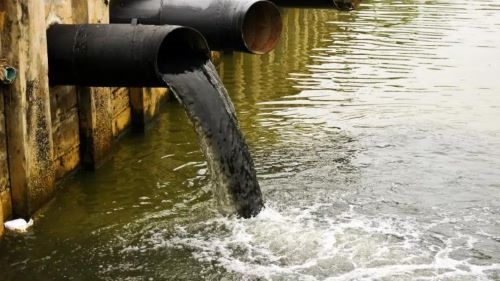

Pollutant 1: Chemical Pollution
Chemical pollution in water bodies occurs when harmful chemicals are released into the environment. This can include industrial waste, pesticides, and heavy metals. Chemical pollution can have devastating effects on aquatic life and human health.
Pollutant 2: Biological Pollution
Biological pollution is caused by the introduction of harmful microorganisms, such as bacteria and viruses, into water sources. It can result from inadequate wastewater treatment and sewage discharge. Biological pollution can lead to waterborne diseases and ecosystem disruption.
Pollutant 3: Physical Pollution
Physical pollution refers to the presence of physical contaminants in water, such as plastic debris and sedimentation. These pollutants can harm aquatic organisms and disrupt natural habitats. Plastic pollution, in particular, has gained significant attention in recent years due to its widespread impact.
Pollutant 4: Thermal Pollution
Thermal pollution occurs when human activities, such as power plant discharges, release heated water into rivers and lakes. This increase in water temperature can harm aquatic ecosystems and reduce oxygen levels, impacting aquatic life.
Pollutant 5: Nutrient Pollution
Nutrient pollution, often caused by excess nutrients from agricultural runoff and wastewater, can lead to harmful algal blooms and oxygen depletion in water bodies. It disrupts the balance of aquatic ecosystems and can result in fish kills.